خانه › آخرین اخبار
مخازن طبی آبادیسآخرین اخبار
اخبار، گزارشها، مصاحبهها و رویدادهای شرکت دانشبنیان مخازن طبی آبادیس
استخدام کارشناس فروش در شرکت دانشبنیان مخازن طبی آبادیس
مطالعه در سایت فعلیآبادیس در روزهای جنگ رمضان؛ تداوم خدمترسانی بدون حتی یک روز توقف
مطالعه در سایت فعلیآغاز فوری عملیات بازسازی کارخانه آبادیس پس از حادثه شهرک صنعتی شمسآباد
مطالعه در سایت فعلی۱۷ مرداد؛ روز خبرنگار گرامی باد
مطالعه در سایت فعلیاعلام عدم تمدید عضویت و انتشار نامه سرگشاده مدیرعامل شرکت آبادیس خطاب به انجمن تولیدکنندگان تجهیزات پزشکی
مطالعه در سایت فعلیانتشار مقاله مدیرعامل مخازن طبی آبادیس در کنفرانس بینالمللی
مقاله علمی جناب آقای علیرضا حسنعلی، مدیرعامل شرکت مخازن طبی آبادیس، با عنوان: «طراحی و پیادهسازی سیستم هوش تجاری برای مدیریت نقدینگی و تصمیمگیری تولید در شرکتهای تجهیزات پزشکی: مطالعه مور…
ادامه مطلب ←پروانه بهره برداری جدید آبادیس صادر گردید
شرکت مخازن طبی آبادیس موفق به دریافت پروانه بهرهبرداری جدید از سوی وزارت صنعت، معدن و تجارت شد؛ این پروانه که در راستای توسعه زیرساختهای تولیدی و افزایش توان داخلی کشور در حوزه تجهیزات پزش…
ادامه مطلب ←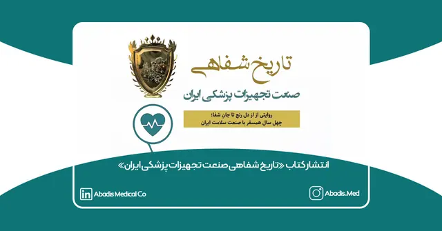
انتشار کتاب «تاریخ شفاهی صنعت تجهیزات پزشکی ایران»
انتشار کتاب «تاریخ شفاهی صنعت تجهیزات پزشکی ایران» با روایت چهل ساله از دل رنج تا جانِ شفا کتاب «تاریخ شفاهی صنعت تجهیزات پزشکی ایران» تألیف دکتر محمدجعفر حسینی شیرازی، پژوهشگر برجسته حوزه س…
ادامه مطلب ←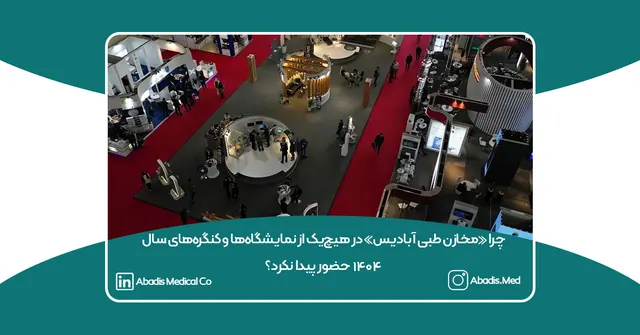
چرا «مخازن طبی آبادیس» در هیچیک از نمایشگاهها و کنگرههای سال ۱۴۰۴ حضور پیدا نکرد؟
در حالیکه سال ۱۴۰۴ برای صنعت تجهیزات پزشکی کشور سالی مملو از نمایشگاهها، کنگرهها و رویدادهای تخصصی بود، شرکت دانشبنیان مخازن طبی آبادیس برخلاف سالهای گذشته، تصمیم گرفت در هیچیک از این …
ادامه مطلب ←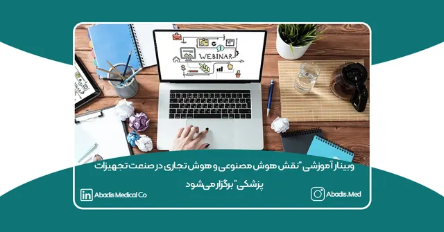
وبینار آموزشی “نقش هوش مصنوعی و هوش تجاری در صنعت تجهیزات پزشکی” برگزار میشود
یکشنبه ۲ آذرماه ۱۴۰۴ وبینار تخصصی نقش هوش مصنوعی (AI) و هوش تجاری (BI) در صنعت تجهیزات پزشکی از ساعت ۱۹ تا ۲۱ با حضور دو سخنران اصلی و با ارائه گواهینامه رسمی حضور در وبینار برگزار خواهد شد.…
ادامه مطلب ←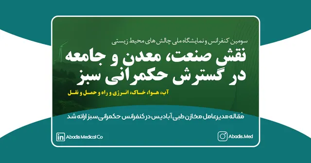
مقاله مدیرعامل مخازن طبی آبادیس در کنفرانس حکمرانی سبز ارائه شد
سومین کنفرانس و نمایشگاه ملی «چالشهای محیطزیستی: نقش صنعت، معدن و جامعه در گسترش حکمرانی سبز» با محوریت توسعه پایدار و با حضور جمعی از اساتید برجسته، پژوهشگران، مدیران صنعتی و مسئولان عالی…
ادامه مطلب ←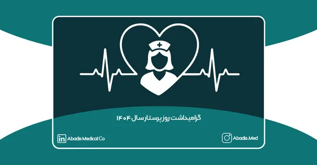
گرامیداشت روز پرستار سال ۱۴۰۴
بهمناسبت فرا رسیدن روز پرستار، شرکت دانشبنیان مخازن طبی آبادیس همچون سالهای گذشته با افتخار از زحمات و فداکاریهای جامعهی پرستاری کشور تجلیل مینماید. پرستاران، قهرمانان گمنام نظام سلامت…
ادامه مطلب ←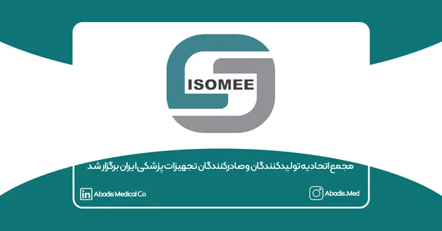
مجمع اتحادیه تولیدکنندگان و صادرکنندگان تجهیزات پزشکی ایران برگزار شد
مجمع عمومی عادی بهطور فوقالعاده اتحادیه تولیدکنندگان و صادرکنندگان تجهیزات پزشکی ایران روز سهشنبه، ۲۳ مهرماه ۱۴۰۴، ساعت ۱۴:۰۰ در محل ساختمان اتاق بازرگانی، صنایع، معادن و کشاورزی ایران بر…
ادامه مطلب ←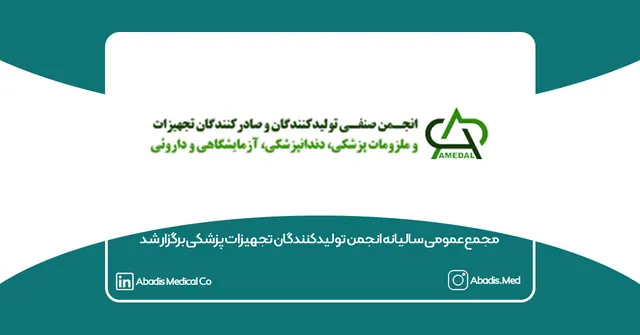
مجمع عمومی سالیانه انجمن تولیدکنندگان تجهیزات پزشکی برگزار شد
مجمع عمومی عادی سالیانه (نوبت اول) انجمن صنفی کارفرمایی تولیدکنندگان تجهیزات و ملزومات پزشکی، دندانپزشکی، آزمایشگاهی و دارویی در تاریخ ۲۰ مهرماه ۱۴۰۴ رأس ساعت ۱۵ در محل نمایشگاه بینالمللی …
ادامه مطلب ←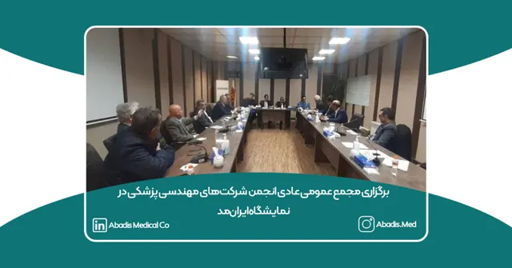
برگزاری مجمع عمومی عادی انجمن شرکتهای مهندسی پزشکی در نمایشگاه ایرانمد
مجمع عمومی عادی (نوبت اول) انجمن صنفی کارفرمایی شرکتهای مهندسی پزشکی ایران روز جمعه ۱۹ مهرماه ۱۴۰۴ رأس ساعت ۱۳:۰۰ در محل نمایشگاه بینالمللی شهر آفتاب، سالن شماره ۵ برگزار گردید. این جلسه ب…
ادامه مطلب ←سومین دوره نمایشگاه ایرانمد ۲۰۲۵ برگزار شد
گامی نو در دیجیتالیسازی، نوآوری صنعتی و مسئولیت اجتماعی سومین دورهی نمایشگاه ایرانمِد ۲۰۲۵ از ۱۷ تا ۲۰ مهرماه ۱۴۰۴، با حضور بیش از ۲۵۰ شرکت داخلی و خارجی در تهران برگزار شد. طبق اعلام برگ…
ادامه مطلب ←دعوت به نشست تخصصی تولید پایدار در شرایط بحرانی و نوسانات ارزی
به گزارش روابط عمومی شرکت دانشبنیان مخازن طبی آبادیس، نشست تخصصی با عنوان «تولید پایدار در شرایط بحرانی و نوسانات ارزی» روز یکشنبه ۲۰ مهرماه ۱۴۰۴ ساعت ۱۱ صبح در محل نمایشگاه ایرانمد 2025 ب…
ادامه مطلب ←گفتوگوی کامل رادیو سلامت با مدیرعامل آبادیس در برنامه «تا ثریا»
برنامهی «تا ثریا» از شبکه رادیو سلامت به بررسی نوآوریهای داخلی در حوزه تجهیزات پزشکی اختصاص داشت و میزبان علیرضا حسنعلی، مدیرعامل شرکت دانشبنیان مخازن طبی آبادیس بود. این گفتوگو با اجرای…
ادامه مطلب ←گفتوگوی مدیرعامل شرکت دانشبنیان آبادیس در برنامه «تا ثریا» رادیو سلامت
برنامهی «تا ثریا» از شبکه رادیو سلامت در گفتوگویی ویژه با علیرضا حسنعلی، مدیرعامل شرکت دانشبنیان مخازن طبی آبادیس، به بررسی دستاوردها و چالشهای تولید ملی در حوزه تجهیزات پزشکی پرداخت. در…
ادامه مطلب ←آبادیس واسط همکاری نمایشگاه ایرانمد و بلوط دالاهو
در راستای مسئولیت اجتماعی بنگاههای دانشبنیان، شورای سیاستگذاری ایرانمد با مشارکت شرکت آبادیس و انجمن بلوط دالاهو، همکاری مشترکی را برای صیانت و احیای جنگلهای زاگرس آغاز کرد. این ابتکار در…
ادامه مطلب ←مصاحبه رئیس هیئتمدیره آبادیس در برنامه «عصر خانواده»
رئیس هیئتمدیره شرکت دانشبنیان مخازن طبی آبادیس، جناب آقای ابوالفضل حسنعلی، روز چهارشنبه ۱۲ شهریورماه ۱۴۰۴ با حضور در برنامه تلویزیونی «عصر خانواده» از شبکه دو سیمای جمهوری اسلامی ایران، به…
ادامه مطلب ←بازخورد کار آماری آبادیس درباره نمایشگاههای ایران هلث و ایرانمد ۱۴۰۳ در سایت خبری تمپا
آبادیس بهتازگی گزارش تحلیل آماری و کیفی نمایشگاههای ایرانهلث و ایرانمد ۱۴۰۳ را منتشر کرده است. این گزارش شامل بررسی دقیق عملکرد شرکتکنندگان، روندهای تعامل بازدیدکنندگان، نحوه ارائه محصو…
ادامه مطلب ←انتشار مقاله مخازن طبی آبادیس در Medium
شرکت دانشبنیان مخازن طبی آبادیس با تمرکز بر نوآوری در مدیریت پساب بیمارستانی و کنترل عفونت، مقالهای علمی و تخصصی در پلتفرم بینالمللی Medium.com منتشر کرده است. این مقاله با عنوان: “Improv…
ادامه مطلب ←مذاکرات بین المللی آبادیس در ایران هلث 1404
در تاریخ ۱۹ خرداد ۱۴۰۴، شرکت مخازن طبی آبادیس با حضور خانم نیلوفر شرفی، مسئول بازرگانی شرکت، در جلسات رسمی B2B برگزارشده در حاشیه نمایشگاه بینالمللی ایران هلث ۱۴۰۴ شرکت کرد. این شرکت به عنو…
ادامه مطلب ←برای زندگی ایستادهایم؛ ارسال ۸ خاور تجهیزات پزشکی در سه روز اول جنگ
در روزهای آغازین جنگ، آبادیس با ارسال ۸ خاور محصولا به ۴۰ نقطه کشور، تعهد خود به مسئولیت اجتماعی را ثابت کرد. ما برای زندگی ایستادهایم.
ادامه مطلب ←تحلیل کیفی نمایشگاههای ایران مد و ایران هلث 1403
در سال گذشته، تیم آبادیس با همکاری شرکت ویراکام اقدام به ارزیابی و تحلیل کیفی دو نمایشگاه شاخص صنعت تجهیزات پزشکی کشور، یعنی ایرانمد و ایرانهلث نمود. این تحلیل، بر اساس دادههای استخراجشد…
ادامه مطلب ←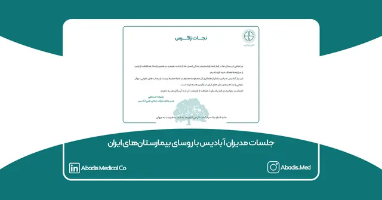
جلسات مدیران آبادیس با رؤسای بیمارستانهای ایران
مجموعه آبادیس حامی کارزار درخواست نجات زاگرس که توسط انجمنهای دوستدار طبیعت در تاریخ ۳۰ تیر ماه ۱۴۰۳ آغاز شده است؛ میباشد.
ادامه مطلب ←اولین گزارش اقدامات توسعه پایدار آبادیس منتشر شد
شرکت دانشبنیان مخازن طبی آبادیس، بهعنوان پیشگام تولید تجهیزات پزشکی پایدار در ایران، نخستین گزارش جامع توسعه پایدار خود تا پایان سال ۱۴۰۳ را منتشر کرد. این گزارش که بر اساس چارچوب اهداف تو…
ادامه مطلب ←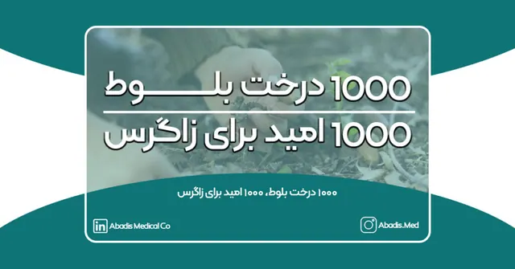
هزار درخت بلوط، هزار امید برای نجات زاگرس
جنگلهای زاگرس نهتنها زیستگاه گونههای نادر گیاهی و جانوری هستند، بلکه در حفظ تعادل محیطزیست نقشی اساسی دارند.
ادامه مطلب ←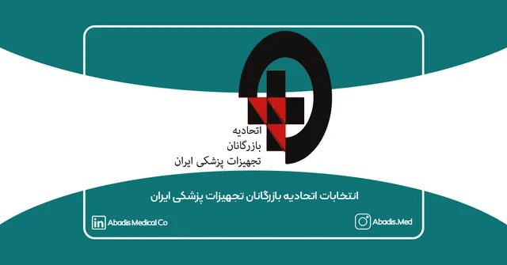
انتخابات اتحادیه بازرگانان تجهیزات پزشکی ایران
انتخابات اتحادیه بازرگانان تجهیزات پزشکی ایران، رویدادی کلیدی برای فعالان این صنعت، روز چهارشنبه ۱۷ بهمن ۱۴۰۳ با مشارکت گسترده اعضا برگزار شد.
ادامه مطلب ←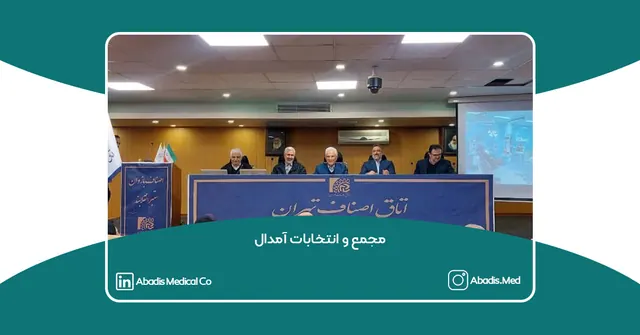
مجمع و انتخابات انجمن آمدال
انتخابات انجمن صنفی تولیدکنندگان و صادرکنندگان تجهیزات و ملزومات پزشکی، دندانپزشکی، آزمایشگاهی و دارویی (AMEDAL) در روز دوشنبه 1 بهمن 1403 در اتاق اصناف تهران برگزار شد.
ادامه مطلب ←گزارش حضور شرکت مخازن طبی آبادیس در ایران کلین ۲۰۲۵
شرکت دانش بنیان مخازن طبی آبادیس، اولین و بزرگترین تولیدکننده کیسه ساکشن یکبار مصرف در ایران، در اولین کنگره جامع پیشگیری از عفونتهای بیمارستانی و ارتقای کیفیت خدمات بهداشتی، تجهیزات پزشکی …
ادامه مطلب ←مصاحبه مدیران آبادیس با گروه تمپا
مصاحبه مدیران شرکت مخازن طبی آبادیس با گروه تمپا: چالشها و مطالبات صنعت تجهیرات پزشکی چهارشنبه، ۱۲ دی ۱۴۰۳، شرکت مخازن طبی آبادیس میزبان تیم رسانهای گروه تمپا بود تا درباره مشکلات و چالشه…
ادامه مطلب ←حمایت آبادیس از کارزار مطالبات معوق تجهیزات پزشکی
درخواست آبادیس از جامعه صنعت سلامت کشور همکاران عزیز و ارجمند، مدیران محترم شرکتها، دانشگاهها، هیئت مدیره تمامی تشکلها، پرسنل محترم، رسانههای محترم و تمامی فعالان صنعت سلامت و تجهیزات پز…
ادامه مطلب ←حفاظت از محیط زیست و کنترل عفونت؛ دستاوردهای آبادیس در مصاحبه با صداوسیما
تحولی بزرگ در کنترل عفونت بیمارستانی و حفاظت از محیط زیست با کیسههای ساکشن یکبارمصرف آبادیس ۹ میلیون لیتر کاهش پساب عفونی به محیط زیست با محصولات دانشبنیان آبادیس نوید حسنعلی، معاونت بازر…
ادامه مطلب ←گزارش حضور آبادیس در کنگره کنترل عفونت ۱۴۰۳
گزارش تصویری از حضور شرکت دانش بنیان مخازن طبی آبادیس در دوازدهمین کنگره تخصصی و ششمین کنگره بین المللی کنترل عفونت و استریلیزاسیون مواد، تجهیزات پزشکی: دوازدهمین کنگره تخصصی و ششمین کنگره ب…
ادامه مطلب ←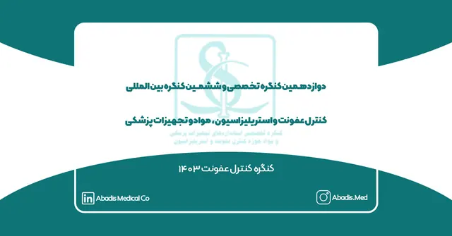
دعوت نامه آبادیس از دوازدهمین کنگره کنترل عفونت
شرکت دانش بنیان مخازن طبی آبادیس پیشرو در صنعت کنترل عفونت بیمارستانی و بزرگترین تولید کننده کیسه ساکشن یکبار مصرف در ایران مفتخر است شما سرور گرامی را به بازدید از غرفه خود در دوازدهمین کنگ…
ادامه مطلب ←گفتوگوی تیترکوتاه با مدیرعامل شرکت مخازن طبی آبادیس درباره نمایشگاه ایران کلین
در روز دوشنبه ۱۲ آذر ماه ۱۴۰۳، تیتر کوتاه با مدیرعامل شرکت دانش بنیان مخازن طبی آبادیس جناب آقای مهندس علیرضا حسنعلی اولین مصاحبه را در خصوص زمینه فعالیت مجموعه آبادیس درحوزه کنترل و پیشگیر…
ادامه مطلب ←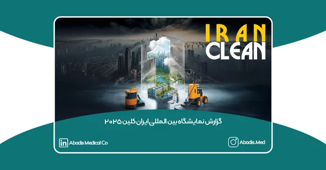
حضور آبادیس در کنگره بین المللی ایران کلین 1403
اولین دوره نمایشگاه بین المللی ایران کلین 2025 و اولین کنگره جامع پیشگیری از عفونتهای بیمارستانی و ارتقاء کیفیت خدمات بهداشتی و استریلیزاسیون در تاریخ ۲۶ تا ۲۸ دی ماه ۱۴۰۳ در هتل المپیک ته…
ادامه مطلب ←گفتوگوی سرکار خانم دکتر محرز درباره نمایشگاه ایران کلین
همزمانی نمایشگاه ایران کلین و کنگره کنترل عفونت؛ گامی مؤثر به سوی بیمارستانهای ایمنتر در گفتوگو با دکتر مینو محرز، متخصص بیماریهای عفونی، اهمیت برگزاری همزمان نمایشگاه ایران کلین و کنگ…
ادامه مطلب ←جلسه همفکری جهت بهبود کنگره کنترل عفونت در آمدال
جلسه همفکری در راستای بهبود دوازدهمین کنگره تخصصی کنترل عفونت و استریلیزاسیون، مواد و تجهیزات پزشکی در دفتر انجمن تولیدکنندگان و صادرکنندگان تجهیزات و ملزومات پزشکی،دندانپزشکی،آزمایشگاه…
ادامه مطلب ←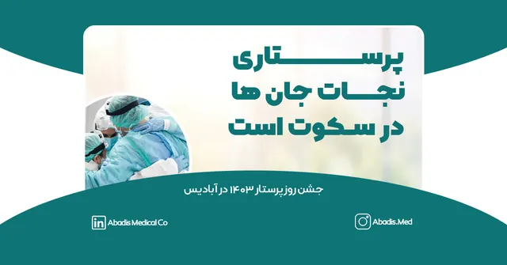
روز پرستار سال 1403 آبادیس
شرکت دانش بنیان مخازن طبی آبادیس به رسم هر ساله خود در روز پنج شنبه 17 آبان ماه 1403 روز پرستار را برای قدردانی از زحمات و فداکاریهای بی پایان پرستاران عزیز جشن گرفت؛ و به همین مناسبت قرعه …
ادامه مطلب ←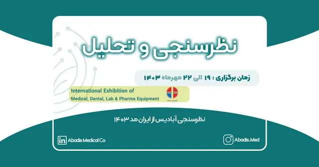
نظرسنجی آبادیس از ایران مد ۱۴۰۳
دومین نمایشگاه بینالمللی ایران مد در حوزههای تخصصی تولید و تامین تجهیزات و ملزومات پزشکی، دندانپزشکی، آزمایشگاهی و ملزومات دارویی در تاریخ ۱۹ الی ۲۲ مهر ماه ۱۴۰۳ از ساعت ۱۰ الی ۱۷ در محل ن…
ادامه مطلب ←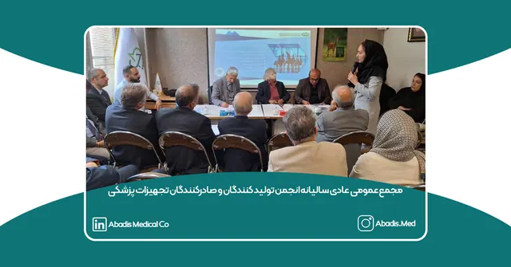
مجمع عمومی عادی سالیانه انجمن آمدال
مجمع عمومی عادی سالیانه انجمن تولیدکنندگان و صادرکنندگان تجهیزات و ملزومات پزشکی،دندانپزشکی،آزمایشگاهی و دارویی انجمن تولیدکنندگان و صادرکنندگان تجهیزات و ملزومات پزشکی،دندانپزشکی،آز…
ادامه مطلب ←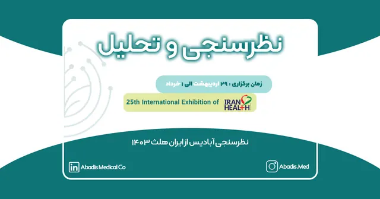
نظرسنجی آبادیس از ایران هلث 1403
بیستوپنجمین نمایشگاه بینالمللی ایران هلث در تاریخ 29 اردیبهشت الی 1 خرداد 1403 از ساعت ۸ الی ۱۵ در محل دائمی نمایشگاه بین المللی برگزار میگردد. به نقل از آیمد ۹۰ در این نمایشگاه ۷۰۲ شرکت…
ادامه مطلب ←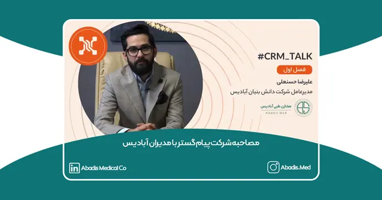
مصاحبه شرکت پیام گستر با مدیران آبادیس
شرکت پیام گستر در اولین قسمت از فصل اول کمپین CRM TALK به شرکت مخازن طبی آبادیس آمدند و با مدیران این مجموعه آقایان نوید و علیرضا حسنعلی مصاحبه کردند. در این مصاحبه علیرضا حسنعلی مدیرعامل شر…
ادامه مطلب ←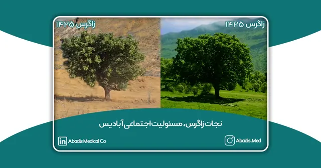
نجات زاگرس،مسئولیت اجتماعی آبادیس
نجات زاگرس فرصتی برای طرح یک راهکار عملیاتی، برای جنگلهای زاگرس در راستای حفظ و نگهداری و احیاء جنگل های سوخته است.
ادامه مطلب ←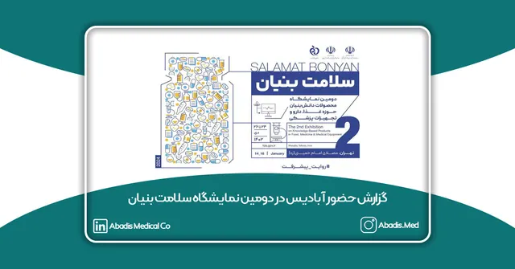
گزارش حضور آبادیس در دومین نمایشگاه سلامت بنیان
دومین نمایشگاه محصولات دانش بنیان حوزه غذا،دارو و تجهیزات پزشکی از تاریخ 24 الی 26 دی ماه 1402 از ساعت 9 صبح الی 5 بعدازظهر،در مصلای امام خمینی (ره) برگزار گردید. نمایشگاه سلامت بنیان فرصت…
ادامه مطلب ←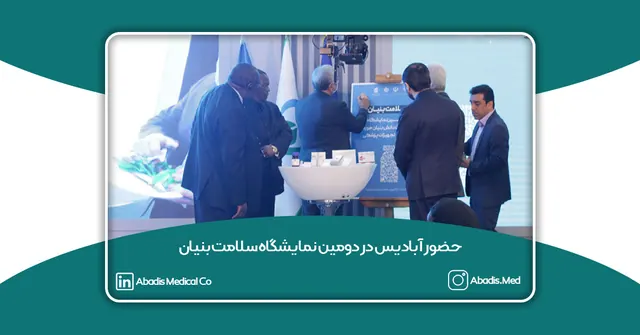
حضور آبادیس در دومین نمایشگاه سلامت بنیان
شرکت دانش بنیان مخازن طبی آبادیس با افتخار حضور خود را در دومین نمایشگاه سلامت بنیان اعلام میکند؛و شما سروران گرامی را به بازدید از غرفه آبادیس به شماره C24 در مصلی تهران دعوت می نماید.
ادامه مطلب ←گزارش کنگره کنترل عفونت ۱۴۰۲
یازدهمین کنگره تخصصی و پنجمین کنگره بین المللی کنترل عفونت و استریلیزاسیون،موادوتجهیزات پزشکی در تاریخ 28 و 29 آذرماه 1402 از ساعت 8 صبح الی 6 بعدازظهر،در سالن همایش های بین المللی رازی …
ادامه مطلب ←دعوت نامه آبادیس در یازدهمین کنگره کنترل عفونت
شرکت دانش بنیان مخازن طبی آبادیس از شما سرواران گرامی برای بازدید از غرفه و دستاوردهایش در یازدهمین کنگره تخصصی و پنجمین کنگره بین المللی کنترل عفونت و استریلیزاسیون، مواد و تجهیزات پزشکی دع…
ادامه مطلب ←روز پرستار سال 1402 آبادیس
مجموعه دانش بنیان آبادیس طبق رسم هرساله روز پرستار را در تاریخ 28 آبان 1402 مصادف با ولادت حضرت زینب(س)جشن گرفت. بعد از دوران کرونا و سال گذشته که آبادیس دلتنگ لبخند پرستاران عزیزمان بود و …
ادامه مطلب ←مراسم نکوداشت پروفسور ولی الله محرابی
شرکت دانش بنیان مخازن طبی آبادیس به عنوان حامی کودکان و چهرههای ماندگار پزشکی، در روز پنج شنبه 18 آبان 1402 در مراسم نکوداشت دکتر ولی الله محرابی به عنوان حامی پزشکان و کادر درمان حضور داشت…
ادامه مطلب ←انتشار و چاپ مقاله آبادیس در ژورنال ISI
انتشار مقاله بهبود اثرات زیست محیطی ناشی از پساب های عفونی بیمارستان ها با استفاده از کیسه ساکشن یکبار مصرف در ژورنال ISI
ادامه مطلب ←گزارش حضور آبادیس در نمایشگاه تجهیزات پزشکی ازبکستان 2023
شرکت دانش بنیان مخازن طبی آبادیس با حضور در این نمایشگاه علاوه بر ارائه محصولات خود با تجهیز دو مرکز درمانی و آشنایی با شرکت های توزیع کننده توانست اقدامات اولیه برای حضور گسترده و تجهیز کلی…
ادامه مطلب ←آغاز سال تحصیلی 1402در آبادیس
“حال خوش مهر “امسال رسمی را بنا نهادیم برای آغاز سال تحصیلی فرزندانمان در آبادیس.
ادامه مطلب ←حضور آبادیس در نمایشگاه تجهیزات پزشکی ازبکستان
نمایشگاه بینالمللی تجهیزات پزشکی ازبکستان در تاشکند یکی از رویدادهای برجسته در حوزه بهداشت و درمان در منطقه آسیای مرکزی است. این نمایشگاه سالانه برگزار میشود
ادامه مطلب ←دیدار معاونت بازرگانی آبادیس با مدیران اتاق بازرگانی عمان
نوید حسنعلی، معاونت بازرگانی مخازن طبی آبادیس در روز دوشنبه مورخ ۱۵ خرداد ماه ۱۴۰۲ در دیداری که در محل اتاق بازرگانی عمان در مسقط با آقای فیصل عبدالله و آقای رشید عامر داشت از فرصتها و موان…
ادامه مطلب ←بیانیه مدیران آبادیس در مورد نمایشگاه ایران هلث 1402
درد دلی با بزرگترها ما،شرکت دانش بنیان مخازن طبی آبادیس، یک شرکت جوان هستیم که این سالها به عنوان تولیدکنندهی پویا و نوآور با انگیزه کارمون شروع کردیم. خیلی مواقع همین بزرگترهایی که در جمع …
ادامه مطلب ←انتخاب آبادیس به عنوان فعالترین شرکت تجهیزات پزشکی
آبادیس با انتخاب فعالین حوزه تجهیزات پزشکی در نظرسنجی سایت مدیرنس با اکثریت آرا بهعنوان تاثیرگذارترین شرکت تجهیزات پزشکی در حوزه شبکههای اجتماعی انتخاب شد. این نظرسنجی در اسفند ماه ۱۴۰۱ د…
ادامه مطلب ←گزارش کنگره کنترل عفونت 1401
دهمین کنگره تخصصی و چهارمین کنگره بین المللی استاندارد های تجهیزات پزشکی و مواد حوزه کنترل عفونت و استریلیزاسیون در تاریخ 25 و 26 دی ماه 1401در سالن همایشهای رازی از ساعت 8 الی 17 برگزار گر…
ادامه مطلب ←دعوت نامه حضور در کنگره کنترل عفونت 1401
پس از 5 سال تلاش مستمر، به لطف خداوند وهمراهی شما عزیزان گرانقدر، توانستیم با بیشترین اثرگذاری در حوزه کنترل عفونت مراکز درمانی، در حفاظت از محیط زیست کوشا و اثرگذار باشیم. در همین راستا شر…
ادامه مطلب ←رونمایی آبادیس از کیسه ساکشن با فیلتر مکانیکی
کیسه ساکشنی جدید از مخازن طبی آبادیس مناسب برای عملهای ارتوپدی و مغز و اعصاب شرکت دانش بنیان مخازن طبی آبادیس محصول جدید خود با نام “کیسه ساکشن یکبار مصرف با فیلتر مکانیکی“ را روانه بازار ک…
ادامه مطلب ←رونمایی از محصول جدید آبادیس در حوزه فیلتراسیون
مخازن طبی آبادیس با شریک تجاری خود شرکت دانش بنیان گوهران گستر نادین تنها تولیدکننده فیلترهای قطعکننده هیدروفوبیک و متخلخل در ایران و خاورمیانه پس از دو سال تلاش بیوقفه تیم تحقیق و توسعه خ…
ادامه مطلب ←حضور آبادیس در نمایشگاه تجهیزات پزشکی گیلان 1401
پنجمین نمایشگاه تخصصی تجهیزات پزشکی، دندانپزشکی، آزمایشگاهی و بیمارستانی گیلان با حضور معاون غذا و دارو، مدير تجهيزات پزشکی دانشگاه علوم پزشکی گيلان، جانشين معاون اقتصادی استانداری گيلان، مع…
ادامه مطلب ←حضور آبادیس در نمایشگاه تجهیزات پزشکی مشهد 1401
هفدمین نمایشگاه بین المللی تجهیزات پزشکی، دندانپزشکی، آزمایشگاهی مشهد با حضور 17 شرکت از استان مشهد و 51 شرکت از استان های خراسان شمالی ، خراسان جنوبی ، تهران ، یزد ، اصفهان ، تبریز در تاریخ…
ادامه مطلب ←رو نمایی از محصول جدید آبادیس در حوزه کنترل عفونت
مخازن طبی آبادیس جهت تکمیل سبد محصول خود در حوزه کنترل عفونت بیمارستانی رسیور پزشکی یکبار مصرف را در چرخه تولید محصولات خود قرار داده است. رسیور پزشکی یکبار مصرف ظرفی مدرج، کم عمق و ظاهری کل…
ادامه مطلب ←مجمع فوق العاده اتحادیه تولیدکنندگان و صادرکنندگان تجهیزات پزشکی ایران
مجمع فوق العاده اتحادیه تولیدکنندگان و صادرکنندگان تجهیزات پزشکی ایران(ISOMEE) مجمع فوق العاده اتحادیه تولیدکنندگان و صادرکنندگان تجهیزات پزشکی ایران که یکی از تشکلهای تجهیزات پزشکی ایر…
ادامه مطلب ←حضور نماینده آبادیس در نمایشگاه تجهیزات پزشکی تبریز 1401
هجدهمین نمایشگاه بین المللی تخصصی پزشکی ایران-تبریز با حضور بیش از 130 غرفه و 80 تولید کننده تخصصی فعال در حوزه (تجهیزات پزشکی، دندانپزشکی، دارویی و آزمایشگاهی تبریز) از تاریخ بیست و پنجم مر…
ادامه مطلب ←شرکت مخازن طبی آبادیس دانش بنیان شد!
شرکت مخازن طبی آبادیس فعال در حوزه کنترل عفونت بیمارستانی و بزرگترین تولید کننده کیسه ساکشن یکبار مصرف در ایران با لطف و عنایت خداوند و تلاش های شبانه روزی مجموعه آبادیس از جمله شرکت های دان…
ادامه مطلب ←گزارش نمایشگاه ایران هلث 1401
بیست و سومین نمایشگاه بین المللی ایران هلث در حوزه تجهیزات پزشکی، دندانپزشکی، آزمایشگاهی و دارویی در محل دائمی نمایشگاه بین المللی تهران در تاریخ ۳ الی ۶ خرداد ماه از ساعت ۹ الی ۱۶ برگزار گر…
ادامه مطلب ←مصاحبه مدیران آبادیس با خبرگزاری اخبار رسمی
مصاحبه مدیران آبادیس با خبرگزاری اخبار رسمی نوید حسنعلی، معاون بازرگانی و فروش، هم بنیانگذار مخازن طبی آبادیس با سابقه مدیریتی ۱۳ ساله در حوزه تجهیزات پزشکی و کارشناس مهندسی پزشکی گرایش بیوا…
ادامه مطلب ←دعوت نامه نمایشگاه ایران هلث 1401
پس از ۵ سال تلاش مستمر، به لطف خداوند و همراهی شما عزیز گرانقدر، توانستیم، با بیشترین اثرگذاری در حوزه کنترل عفونت مراکز درمانی، در حفاظت از محیط زیست کوشا و اثرگذار باشیم. در همین راستا آبا…
ادامه مطلب ←مصاحبه مدیران آبادیس با خبرگزاری فارس
متن مصاحبه خبر گزاری فارس با مدیران شرکت دانش بنیان مخازن طبی آبادیس به صورت زیر میباشد. مصاحبه ای با مدیران جوان و موفق شرکت دانش بنیان مخازن طبی آبادیس فعال در حوزه تولید محصولات تجهیزات …
ادامه مطلب ←مصاحبه مدیران مخازن طبی آبادیس با مدیرنس
مصاحبه مدیران مخازن طبی آبادیس با مدیرنس برای مشاهده مصاحبه مدیران شرکت مخازن طبی آبادیس با مدیرعامل شرکت مدیرنس که به صورت لایو اینستاگرامی با موضوع مهندسی پزشکی و حوزه تجهیزات پزشکی در تار…
ادامه مطلب ←برندگان روز پرستار سال ۱۴۰۰ آبادیس
اسامی برندگان قرعهکشی روز پرستار مخازن طبی آبادیس به شرح زیر میباشد: سرکار خانم فاطمه امیدیان از بیمارستان امام سجاد شهریار سرکار خانم معصومه گودرزی از بیمارستان امیرالمومنین جوادیه سرکار …
ادامه مطلب ←رونمایی از محصولات جدید آبادیس در حوزه فیلتراسیون
شرکت مخازن طبی آبادیس برای تکمیل سبد محصولات خود فیلتر قطع کننده جریان و فیلتر آنتی باکتریال را وارد چرخه تولید خود کرده است. فیلتر قطع کننده آبادیس مناسب برای قرار گرفتن بر سر راه دستگاه ها…
ادامه مطلب ←محصولات جدید آبادیس رونمایی شد
مخازن طبی آبادیس بزرگترین تولید کننده کیسه ساکشن یکبار مصرف در ایران چندی پیش از ۲ محصول جدید خود به نام ساکشن دیواری و رگولاتور رونمایی کرد. رگولاتور که یکی از محصولات جدید تولیدی این شرکت …
ادامه مطلب ←اخذ گواهی CE اتحادیه اروپا
با نهایت افتخار اخذ گواهی CE اتحادیه اروپا برای مخازن طبی آبادیس به عنوان اولین تولیدکننده کیسه ساکشن یک بار مصرف ایرانی را به همه دست اندرکاران مجموعه آبادیس، همکاران و مشتریان عزیز تبریک م…
ادامه مطلب ←فعالیت های آبادیس در بحران کرونا
مخازن طبی آبادیس به عنوان یکی از تولید کنندگان حوزه تجهیزات پزشکی در بحران کرونا سعی بر این داشت طبق وظیفه و تکلیف خود در کنار مراکز درمانی کشور حضور...
ادامه مطلب ←حضور آبادیس در نمایشگاه تجهیزات پزشکی اصفهان 1398
چهاردهمین نمایشگاه بین المللی صنایع و تجهیزات پزشکی، دندانپزشکی، آزمایشگاهی و خدمات وابسته در تاریخ 2 الی 5 بهمن ماه سال 1398 از ساعت15 الی 21 با حضور بیش از 110 شرکت داخلی و تعدادی از نماین…
ادامه مطلب ←برندگان قرعه کشی روز پرستار سال ۹۸
ادامه مطلب ←قرعه کشی بزرگ روز پرستار ۹۸ آبادیس
قرعه کشی بزرگ آبادیس روز پرستار سال ۹۸ برگزار شد … شما را به دیدن فیلم کامل قرعه کشی دعوت می نماییم .
ادامه مطلب ←مصاحبه ماهنامه مهندسی پزشکی با مشاور استراتژیک آبادیس
مصاحبه ماهنامه مهندسی پزشکی با مشاور استراتژیک مخازن طبی آبادیس
ادامه مطلب ←بازتاب خبری مدیرنس از حضور آبادیس در ایران هلث 1398
در این گزارش، مدیرنس بیست و دومین نمایشگاه بین المللی ایران هلث که در خرداد 1398 برگزار شده را پوشش میدهد. در این گزارش مدیرنس با مدیران شرکت مخازن طبی آبادیس در غرفه آبادیس مصاحبه میکند؛ و…
ادامه مطلب ←مصاحبه آبادیس با رادیو ایران در ایران هلث ۹۸
بازتاب خبری حضور مخازن طبی آبادیس در نمایشگاه ایران هلث ۹۸ در رادیو ایران-برنامه رهاورد. با رونمایی از فیکسر لوله تراشه و افتتاح طرح صندوق ایده های آبادیس
ادامه مطلب ←مصاحبه تیم آبادیس در ایران هلث ۹۸
مدیریت مخازن طبی آبادیس از زحمات تمامی همکاران خود در ایام نمایشگاه کمال تشکر و قدردانی را دارد. امید است این تیم با اهداف خود موفقیت های بیشتری را برای اعتلا و ارتقای صنعت تجهیزات پزشکی کشو…
ادامه مطلب ←گزارش تصویری از حضور آبادیس در ایران هلث 1398
بیست و دومین نمایشگاه بین المللی ایران هلث در حوزه تجهیزات پزشکی، دندانپزشکی، آزمایشگاهی و دارویی در محل دائمی نمایشگاه بین المللی تهران در تاریخ 19 الی 22 خرداد ماه سال 1398 از ساعت 10 الی …
ادامه مطلب ←رونمایی از فیکسر لوله تراشه آبادیس
محصول جدید آبادیس با عنوان فیکسر لوله تراشه در اولین روز از بیست و دومین نمایشگاه بین المللی تجهیزات پزشکی داروئی و آزمایشگاهی رونمایی گردید و موردتوجه بازدیدکنندگان قرار گرفت.
ادامه مطلب ←گزارش کنگره کنترل عفونت ۱۳۹۷
هشتمین کنگره تخصصی و دومین کنگره بین المللی کنترل عفونت و استریلیزاسیون،موادوتجهیزات پزشکی در تاریخ ۲۱ و ۲۲ مرداد سال ۱۳۹۷، از ساعت ۸ صبح الی ۶ بعد از ظهر در سالن همایش های رازی توسط دان…
ادامه مطلب ←گزارش نمایشگاه بین المللی ایران هلث 1397
بیست و یکمین نمایشگاه بین المللی ایران هلث در حوزه تجهیزات پزشکی، دندانپزشکی، آزمایشگاهی و دارویی در محل دائمی نمایشگاه بین المللی تهران در تاریخ 29 خرداد الی 1 تیرماه سال 1397 از ساعت 10 ال…
ادامه مطلب ←موردی یافت نشد.